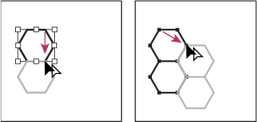
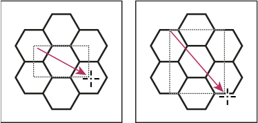

Create seamless geometric patterns
- Make sure that Smart Guides are turned on and that Snap To Point is selected in the View menu.
- Select the geometric object. For precise positioning, position the Direct Selection tool on one of the object’s anchor points.
- Begin dragging the object vertically from one of its anchor points; then press Alt+Shift (Windows) or Option+Shift (Mac OS) to copy the object and constrain its movement.
- When the copy of the object has snapped into place, release the mouse button and then release the keys.
- Using the Group Selection tool, Shift-click to select
both objects, and begin dragging the objects horizontally by one
of their anchor points; then press Alt+Shift (Windows) or Option+Shift
(Mac OS) to create a copy and constrain the move.

Select both objects (left) and drag to create a copy (right).
- When the copy of the object has snapped into place, release the mouse button, and then release the keys.
- Repeat steps 2 through 6 until you’ve built the pattern you want.
- Use the Rectangle tool to
do one of the following:
-
For a fill pattern, draw a bounding box from the center point of the upper left object to the center point of the lower right object.
-
For a brush pattern, draw a bounding box that surrounds the objects and coincides with their outer boundaries. If the pattern is to be a corner tile, hold down Shift as you drag to constrain the bounding box to a square.

Bounding box for a fill pattern (left) compared to the bounding box for a brush pattern (right)
-
- Paint the geometric objects the desired color.
- Save the geometric objects as a pattern swatch.